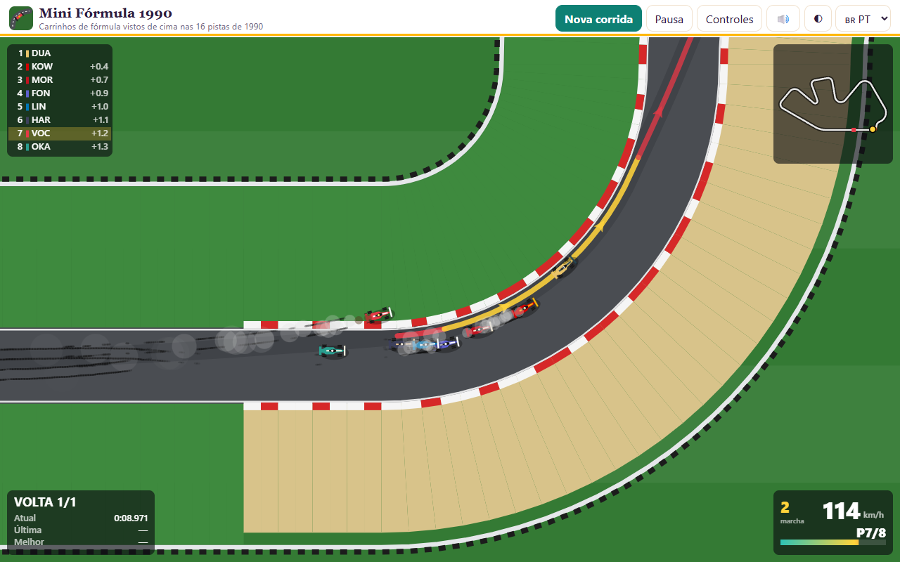
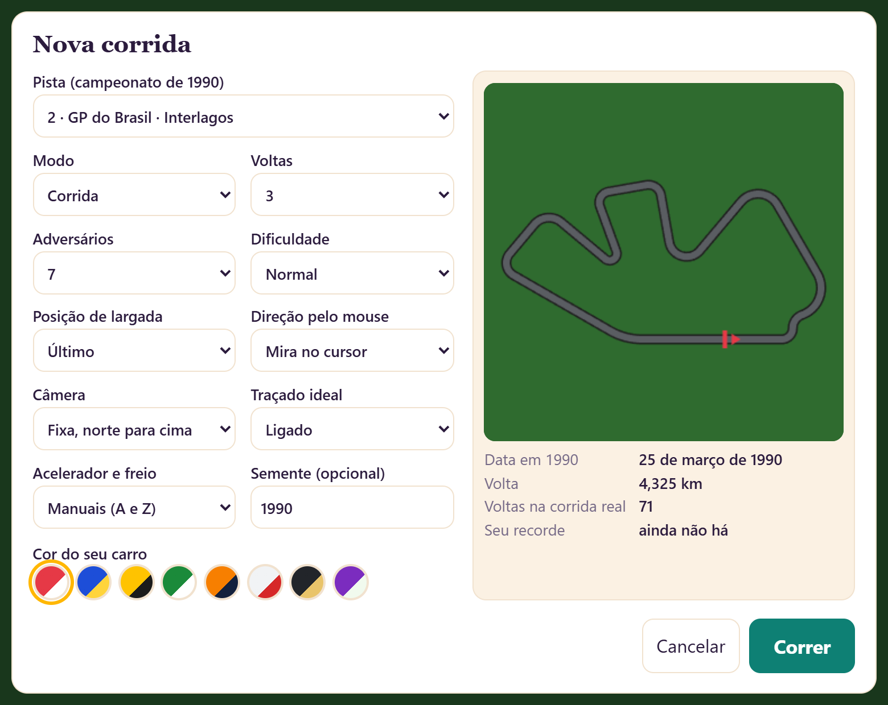
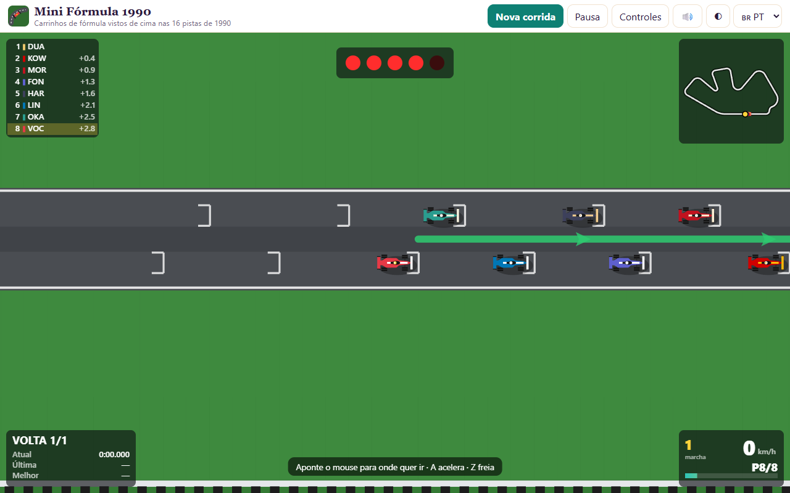
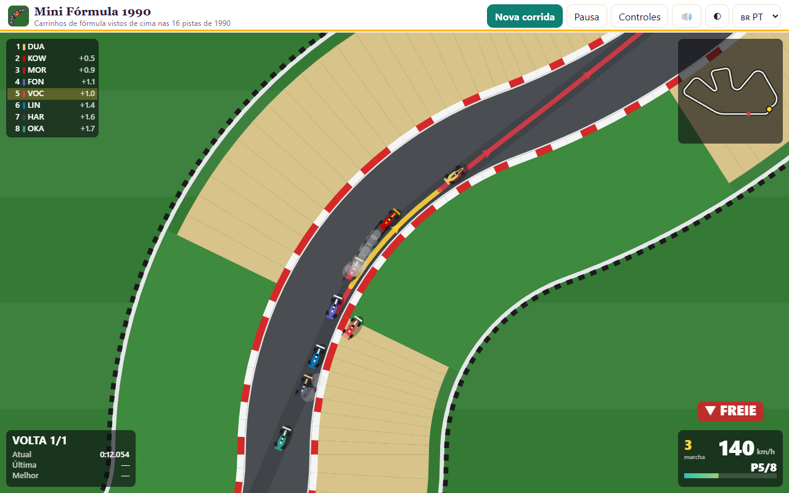
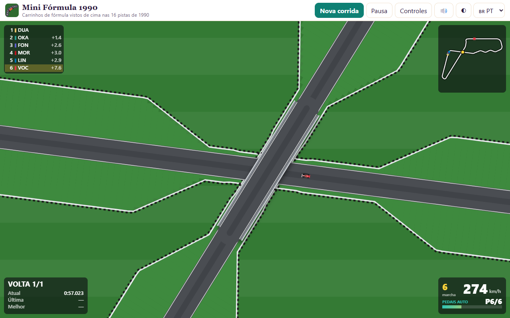
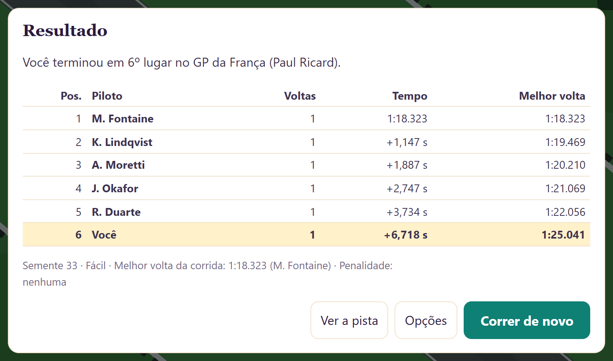
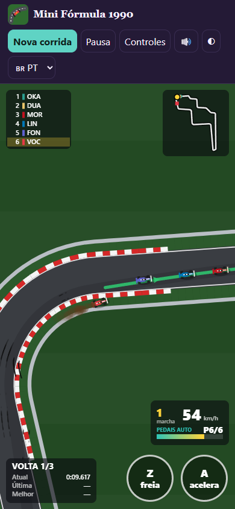
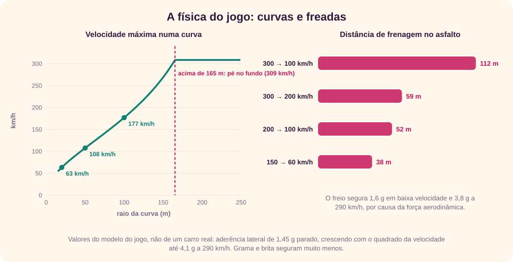

O jogo
O Mini Fórmula 1990 é uma corrida de carrinhos de fórmula vistos de cima. Você dirige com o mouse, acelera com a tecla A e freia com a Z, contra até nove carros do computador ou sozinho, no treino livre. As pistas são as 16 do campeonato mundial de 1990, de Phoenix a Adelaide. [1]
É um único arquivo HTML, que funciona sem internet, em quatro idiomas, no computador e no celular. Duas ajudas opcionais facilitam o começo: o traçado ideal, uma linha colorida que mostra por onde ir e onde frear, e os pedais automáticos, em que você só dirige.

O campeonato de 1990
O campeonato mundial de 1990 teve 16 corridas, de março a novembro. [2] O jogo usa a mesma lista, na mesma ordem, com o comprimento da volta e o número de voltas de cada corrida naquele ano. [3]
| Etapa | Grande Prêmio | Circuito | Data | Volta | Voltas |
|---|---|---|---|---|---|
| 1 | Estados Unidos | Phoenix | 11/03 | 3,800 km | 72 |
| 2 | Brasil | Interlagos | 25/03 | 4,325 km | 71 |
| 3 | San Marino | Imola | 13/05 | 5,040 km | 61 |
| 4 | Mônaco | Monaco | 27/05 | 3,328 km | 78 |
| 5 | Canadá | Gilles Villeneuve (Montreal) | 10/06 | 4,390 km | 70 |
| 6 | México | Hermanos Rodríguez | 24/06 | 4,421 km | 69 |
| 7 | França | Paul Ricard | 08/07 | 3,813 km | 80 |
| 8 | Grã-Bretanha | Silverstone | 15/07 | 4,778 km | 64 |
| 9 | Alemanha | Hockenheim | 29/07 | 6,802 km | 45 |
| 10 | Hungria | Hungaroring | 12/08 | 3,968 km | 77 |
| 11 | Bélgica | Spa-Francorchamps | 26/08 | 6,940 km | 44 |
| 12 | Itália | Monza | 09/09 | 5,800 km | 53 |
| 13 | Portugal | Estoril | 23/09 | 4,350 km | 71 previstas, 61 corridas |
| 14 | Espanha | Jerez | 30/09 | 4,218 km | 73 |
| 15 | Japão | Suzuka | 21/10 | 5,860 km | 53 |
| 16 | Austrália | Adelaide | 04/11 | 3,780 km | 81 |
Duas curiosidades daquele ano estão nas fontes. Interlagos tinha acabado de ser reformado: a pista perdeu 3,5 km, curvas rápidas e a longa reta do “Retão”. [4] Em Portugal, a corrida foi interrompida depois de um acidente e terminou na volta 61, das 71 previstas. [5]
↑ Voltar ao topoDivergências nas fontes. Em duas corridas, a distância total da ficha não bate com voltas vezes comprimento. Na Grã-Bretanha, 64 × 4,778 km dá 305,792 km, e a ficha diz 305,904 km. Na Bélgica, 44 × 6,940 km dá 305,36 km, e a ficha diz 301,172 km; o próprio texto do artigo fala em 301 km. O jogo usa o comprimento da volta, que é o mesmo nos dois valores. [3]
As pistas no jogo
Os traçados do jogo são simplificados. Cada pista foi descrita à mão como uma sequência de retas e curvas, ou como um polígono com as quinas arredondadas, para lembrar o desenho do circuito. O programa fecha a volta, confere que os trechos não se cruzam e escala o resultado para o comprimento oficial de 1990. [1] Não são cópias de mapas: Monza, Hockenheim e o oito de Suzuka lembram bem o original; Mônaco, Phoenix e Adelaide, só no geral.
![Grade com as 16 pistas do jogo, na ordem do calendário de 1990, cada uma com o comprimento da volta: 1. Phoenix (3,800 km), 2. Interlagos (4,325 km), 3. Imola (5,040 km), 4. Monaco (3,328 km), 5. Gilles Villeneuve (4,390 km), 6. Hermanos Rodríguez (4,421 km), 7. Paul Ricard (3,813 km), 8. Silverstone (4,778 km), 9. Hockenheim (6,802 km), 10. Hungaroring (3,968 km), 11. Spa-Francorchamps (6,940 km), 12. Monza (5,800 km), 13. Estoril (4,350 km), 14. Jerez (4,218 km), 15. Suzuka (5,860 km), 16. Adelaide (3,780 km). Em cada desenho, uma marca vermelha mostra a largada e o sentido da corrida. Suzuka aparece como um oito, com um cruzamento. Os traçados são simplificados e cada um está numa escala diferente.](rc_images/MiniPistas.svg)
Em volta do asfalto, o jogo calcula sozinho o que existe em cada trecho:
- Zebras vermelhas e brancas onde a curva aperta.
- Caixas de brita por fora das curvas fechadas, nas pistas permanentes.
- Grama e, no fim dela, um muro. Nos circuitos de rua (Phoenix, Mônaco, Montreal e Adelaide), o muro fica a poucos metros do asfalto.
- Quando dois trechos passam perto, o muro fica entre eles, na metade do caminho.
Em Suzuka, o trecho de volta passa por cima da ponte, e os carros que estão embaixo são desenhados sob ela.
↑ Voltar ao topoControles
| Comando | O que faz |
|---|---|
| Mouse | dirige o carro, no modo Mira ou no modo Volante (veja a figura) |
| A | acelerador |
| Z | freio; com o carro parado, segure para dar ré |
| ← → | viram, como alternativa ao mouse |
| R | devolve o carro ao meio da pista, parado |
| P ou Esc | pausa; no treino livre, Esc encerra e mostra as voltas |
| Toque | um dedo toca na pista para mirar; o outro segura os botões A e Z no canto |
![Dois painéis. À esquerda, o modo Mira: um carro numa reta, o cursor à frente e acima, uma linha amarela do carro ao cursor e um arco marcando o erro de direção entre o nariz do carro e o cursor; o carro vira para fechar esse ângulo. À direita, o modo Volante: uma linha tracejada no centro da tela, o cursor à direita dela, uma seta amarela indicando a distância do centro e um volante girado para a direita. Abaixo, a nota de que o ângulo máximo das rodas cai de 26 graus parado para cerca de 4 graus a 300 km/h.](rc_images/MiniMira.svg)
Na Mira, deixe o cursor um pouco à frente do carro, na saída da curva, e vá movendo junto. Se o cursor ficar em cima do carro, ele não vira. O Volante combina com a câmera que gira com o carro, escolhida na opção Câmera.
↑ Voltar ao topoPasso a passo no app
1. Escolha a pista e as opções
Ao abrir o jogo, aparece a janela Nova corrida. À direita, o desenho da pista escolhida, com a largada em vermelho, a data da corrida de 1990, o comprimento da volta, as voltas da corrida real e o seu recorde. Para começar, use 3 voltas, 7 adversários, nível Normal e o traçado ideal ligado. Escolha a cor do carro e clique em Correr.

| Opção | Escolhas |
|---|---|
| Modo | corrida, ou treino livre sozinho e sem limite de voltas |
| Voltas | 1, 3, 5, 10 ou 20 |
| Adversários | 1, 3, 5, 7 ou 9, com nomes fictícios |
| Dificuldade | fácil, normal ou difícil (veja os números) |
| Posição de largada | último, meio do grid ou pole position |
| Direção pelo mouse | Mira no cursor ou Volante |
| Câmera | fixa com o norte para cima, ou girando com o carro |
| Traçado ideal | desligado ou ligado |
| Acelerador e freio | manuais (A e Z) ou automáticos |
| Semente | com a mesma semente e os mesmos comandos, a corrida se repete |
2. Espere as luzes apagarem
Os carros ficam no grid, em duas filas. Cinco luzes vermelhas acendem uma por segundo. Depois de um intervalo sorteado, todas apagam: é a hora de acelerar. Se o seu carro andar antes, você leva 5 segundos de punição no tempo final.

3. Siga o traçado ideal
Com o traçado ideal ligado, uma linha mostra os próximos 380 m do caminho mais rápido. Verde é para acelerar, amarelo é curva no limite e vermelho é zona de frenagem. Se você chega rápido demais, a linha fica vermelha desde o carro até a curva, e o aviso FREIE aparece acima do velocímetro.

4. Ou deixe os pedais com o carro
Com acelerador e freio automáticos, o carro acelera nas retas e freia antes das curvas, e você só dirige. O velocímetro mostra PEDAIS AUTO. A tecla Z continua freando, se você quiser frear mais cedo. As voltas feitas assim não contam como recorde pessoal.
5. Passe pela ponte de Suzuka
Suzuka é um oito. Na metade da volta, a pista passa por baixo da reta oposta, e na volta você passa por cima. Os carros de um nível não batem nos do outro.

6. Veja o resultado
Quando você cruza a linha na última volta, aparece a bandeira quadriculada. O tempo acelera até os outros carros terminarem, e a janela de resultado mostra a posição, as voltas, o tempo ou a diferença para o vencedor e a melhor volta de cada piloto, além da volta mais rápida da corrida e da sua punição, se houver.

7. No celular
No celular, os botões A e Z aparecem no canto da tela. Segure o A com um dedo e toque na pista à frente com o outro para mirar. Os pedais automáticos ajudam muito na tela pequena.

A física do jogo
O carro do jogo segue um modelo simples, pensado para ser jogável, não para imitar um carro de 1990 em detalhe. [1] Três ideias explicam quase tudo:
- Aderência que cresce com a velocidade. Os pneus seguram 1,45 g de força lateral numa curva lenta. A asa soma aderência com o quadrado da velocidade, e a 290 km/h o carro segura 4,1 g. Por isso as curvas rápidas parecem mais fáceis do que as lentas.
- Frenagem forte em alta velocidade. O freio segura 1,6 g devagar e 3,8 g a 290 km/h, pelo mesmo motivo.
- Pneus com limite. Se a curva pede mais aderência do que existe, o carro escorrega para fora, deixa marcas e solta fumaça. Frear forte virando também gasta a aderência.

Outros detalhes do modelo: potência de 800 W por quilo, 6 marchas, velocidade máxima de uns 309 km/h, limitada pela resistência do ar. Na grama, os pneus seguram 38% do normal, e na brita, 30%, com muito mais resistência ao avanço. Os muros param o carro, sem dano. O quanto as rodas viram cai com a velocidade: 26° parado, cerca de 4° a 300 km/h.
↑ Voltar ao topoO que os números dizem
Para saber quanto cada nível anda, medi com o código do próprio jogo a volta lançada de um carro sozinho em cada pista: a segunda volta de um treino de duas voltas, sem adversários. O computador dirigiu nos três níveis, e houve uma quarta medida com os pedais automáticos, usando a direção do computador. [1]
![Gráfico com uma linha por pista mostrando a volta lançada de um carro sozinho, medida com o código do jogo. Um círculo marca o tempo do computador no nível difícil, e uma faixa vai até o tempo do nível fácil; um losango marca o tempo com pedais automáticos, sempre entre o difícil e o fácil. Tempos do nível difícil: Phoenix 79,5 s; Interlagos 81,8 s; Imola 84,5 s; Monaco 81,8 s; Gilles Villeneuve 81,7 s; Hermanos Rodríguez 72,9 s; Paul Ricard 69,6 s; Silverstone 73,5 s; Hockenheim 109,2 s; Hungaroring 76,4 s; Spa-Francorchamps 113,8 s; Monza 88,2 s; Estoril 81,8 s; Jerez 83,2 s; Suzuka 94,3 s; Adelaide 89,2 s.](rc_images/MiniTempos.svg)
- A dificuldade é a velocidade do computador nas curvas. Os pilotos andam a 82–88% da velocidade ideal no fácil, a 90–95,5% no normal e a 96,5–100% no difícil. Na medição, o nível fácil foi de 8,9% a 11,4% mais lento que o difícil, e o normal, de 3,2% a 4,2%.
- Os pedais automáticos custam pouco tempo. Com a direção perfeita do computador, ficaram de 2,3% a 3,8% mais lentos que o nível difícil, mais ou menos como o nível normal. Com uma pessoa dirigindo, a diferença cresce, porque o automático reduz a velocidade quando o carro sai da linha ideal.
- Mônaco é a mais lenta, Monza a mais rápida. No nível difícil, a média foi de 147 km/h em Mônaco e 237 km/h em Monza.
↑ Voltar ao topoO que estes números não medem. São tempos de um modelo, com pistas e física simplificadas, e não tempos reais de 1990. Também não medem uma pessoa jogando: a direção do computador é sempre a mesma, e uma pessoa erra e acerta de jeitos diferentes.
Dicas de pilotagem
- Freie em linha reta. Termine de frear antes de virar. Freio e curva juntos gastam a mesma aderência.
- Abra, feche, abra. Entre na curva pelo lado de fora, toque a parte de dentro no meio dela e saia aberto. É o que o traçado ideal desenha.
- Acelere na saída, não na entrada. A saída de uma curva lenta decide a velocidade da reta inteira que vem depois.
- Olhe longe. A câmera se afasta com a velocidade para mostrar mais pista. Use o minimapa para saber o que vem.
- Use as zebras com cuidado. Elas seguram quase como o asfalto, mas a grama logo depois segura menos da metade.
- Ultrapasse nas freadas. O computador desvia de um carro mais lento à frente, mas segue o perfil de velocidade dele. Freando um pouco mais tarde por dentro, você ganha a posição.
- Comece com ajudas e tire uma de cada vez. Primeiro os pedais automáticos, depois só o traçado ideal, por fim nenhuma.
Erros comuns
“Cursor em cima do carro vira mais.”
É o contrário. Com o cursor colado no carro, ele não vira nada. Deixe o cursor à frente, na direção da saída da curva.
“Segurar A o tempo todo é mais rápido.”
Só nas retas. Chegar rápido demais faz o carro escorregar para a grama, que freia muito mais que o freio.
“Na grama dá para cortar caminho.”
A grama segura 38% do normal e a brita 30%, e as duas freiam o carro. Além disso, a volta só conta se o carro passar pela metade da pista.
“Ré serve para frear.”
A tecla Z só engata a ré com o carro quase parado. Em movimento, ela é o freio.
“Os traçados são cópias dos mapas.”
Não. São desenhos simplificados com o comprimento certo. Servem para lembrar o circuito, não para treinar para o real.
Revisão rápida
1. Quais teclas aceleram e freiam?
A acelera e Z freia. Com o carro parado, Z dá ré.
2. No modo Mira, onde deixar o cursor?
Um pouco à frente do carro, na direção da saída da curva. Em cima do carro, ele não vira.
3. O que significa a linha vermelha do traçado ideal?
Zona de frenagem. Se ela fica vermelha desde o carro e aparece FREIE, você precisa frear já.
4. Quantas corridas teve o campeonato de 1990, e qual foi a primeira?
16 corridas. A primeira foi em Phoenix, nos Estados Unidos, em 11 de março.
5. O que aconteceu com Interlagos em 1990?
A pista foi reformada e encurtada em 3,5 km, perdendo curvas rápidas e a longa reta do Retão.
6. Por que as curvas rápidas parecem mais fáceis que as lentas?
Porque a asa soma aderência com a velocidade: 1,45 g numa curva lenta, 4,1 g a 290 km/h.
7. Quanto os pedais automáticos custam de tempo, na simulação?
De 2,3% a 3,8% em relação ao nível difícil, com a direção do computador.
8. Voltas com pedais automáticos contam como recorde?
Não. Só voltas com acelerador e freio manuais entram no recorde pessoal.
Referências
- Giovani Perotto Mesquita, “Mini Fórmula 1990”, jogo deste site, giovanipm.github.io/MiniFormula.html. Os traçados, as constantes da física, os níveis e as ajudas estão no código do jogo. As figuras e as medições deste tutorial usam esse mesmo código; cada medição é uma volta lançada por pista e por piloto.
- Wikipedia, “1990 Formula One World Championship”, acesso em 15/11/2026, en.wikipedia.org/wiki/1990_Formula_One_World_Championship. Fonte do calendário: etapas, circuitos e datas.
- Wikipedia, artigos de cada Grande Prêmio de 1990, ficha técnica (comprimento da volta, número de voltas e distância), acesso em 15/11/2026: Estados Unidos, Brasil, San Marino, Mônaco, Canadá, México, França, Grã-Bretanha, Alemanha, Hungria, Bélgica, Itália, Portugal, Espanha, Japão, Austrália.
- Wikipedia, “1990 Brazilian Grand Prix”, acesso em 15/11/2026, en.wikipedia.org/wiki/1990_Brazilian_Grand_Prix. Trecho sobre o encurtamento da pista.
- Wikipedia, “1990 Portuguese Grand Prix”, acesso em 15/11/2026, en.wikipedia.org/wiki/1990_Portuguese_Grand_Prix. Corrida interrompida na volta 61 de 71.
![Grid with the game's 16 tracks, in 1990 calendar order, each with its lap length: 1. Phoenix (3.800 km), 2. Interlagos (4.325 km), 3. Imola (5.040 km), 4. Monaco (3.328 km), 5. Gilles Villeneuve (4.390 km), 6. Hermanos Rodríguez (4.421 km), 7. Paul Ricard (3.813 km), 8. Silverstone (4.778 km), 9. Hockenheim (6.802 km), 10. Hungaroring (3.968 km), 11. Spa-Francorchamps (6.940 km), 12. Monza (5.800 km), 13. Estoril (4.350 km), 14. Jerez (4.218 km), 15. Suzuka (5.860 km), 16. Adelaide (3.780 km). In each drawing, a red mark shows the start and the direction of the race. Suzuka appears as a figure eight with one crossing. The layouts are simplified and each is at a different scale.](rc_images/MiniPistas-en.svg)
![Two panels. On the left, Aim mode: a car on a straight, the cursor ahead and above, a yellow line from the car to the cursor and an arc marking the heading error between the car's nose and the cursor; the car turns to close that angle. On the right, Wheel mode: a dashed line at the screen centre, the cursor to its right, a yellow arrow showing the distance from the centre and a steering wheel turned to the right. Below, a note that the maximum wheel angle falls from 26 degrees when stopped to about 4 degrees at 300 km/h.](rc_images/MiniMira-en.svg)
![Chart with one row per track showing the flying lap of a car alone, measured with the game's code. A circle marks the computer's time at hard level, and a band runs to the easy-level time; a diamond marks the time with automatic pedals, always between hard and easy. Hard-level times: Phoenix 79.5 s; Interlagos 81.8 s; Imola 84.5 s; Monaco 81.8 s; Gilles Villeneuve 81.7 s; Hermanos Rodríguez 72.9 s; Paul Ricard 69.6 s; Silverstone 73.5 s; Hockenheim 109.2 s; Hungaroring 76.4 s; Spa-Francorchamps 113.8 s; Monza 88.2 s; Estoril 81.8 s; Jerez 83.2 s; Suzuka 94.3 s; Adelaide 89.2 s.](rc_images/MiniTempos-en.svg)
![Griglia con le 16 piste del gioco, nell'ordine del calendario 1990, ognuna con la lunghezza del giro: 1. Phoenix (3,800 km), 2. Interlagos (4,325 km), 3. Imola (5,040 km), 4. Monaco (3,328 km), 5. Gilles Villeneuve (4,390 km), 6. Hermanos Rodríguez (4,421 km), 7. Paul Ricard (3,813 km), 8. Silverstone (4,778 km), 9. Hockenheim (6,802 km), 10. Hungaroring (3,968 km), 11. Spa-Francorchamps (6,940 km), 12. Monza (5,800 km), 13. Estoril (4,350 km), 14. Jerez (4,218 km), 15. Suzuka (5,860 km), 16. Adelaide (3,780 km). In ogni disegno, un segno rosso indica la partenza e il senso di marcia. Suzuka appare come un otto, con un incrocio. I tracciati sono semplificati e ognuno è in una scala diversa.](rc_images/MiniPistas-it.svg)
![Due pannelli. A sinistra, la modalità Mira: un'auto su un rettilineo, il cursore davanti e in alto, una linea gialla dall'auto al cursore e un arco che segna l'errore di direzione tra il muso dell'auto e il cursore; l'auto gira per chiudere quell'angolo. A destra, la modalità Volante: una linea tratteggiata al centro dello schermo, il cursore a destra, una freccia gialla che indica la distanza dal centro e un volante girato a destra. Sotto, la nota che l'angolo massimo delle ruote scende da 26 gradi da fermo a circa 4 gradi a 300 km/h.](rc_images/MiniMira-it.svg)
![Grafico con una riga per pista che mostra il giro lanciato di un'auto da sola, misurato col codice del gioco. Un cerchio segna il tempo del computer a livello difficile, e una fascia arriva al tempo del livello facile; un rombo segna il tempo con i pedali automatici, sempre tra difficile e facile. Tempi del livello difficile: Phoenix 79,5 s; Interlagos 81,8 s; Imola 84,5 s; Monaco 81,8 s; Gilles Villeneuve 81,7 s; Hermanos Rodríguez 72,9 s; Paul Ricard 69,6 s; Silverstone 73,5 s; Hockenheim 109,2 s; Hungaroring 76,4 s; Spa-Francorchamps 113,8 s; Monza 88,2 s; Estoril 81,8 s; Jerez 83,2 s; Suzuka 94,3 s; Adelaide 89,2 s.](rc_images/MiniTempos-it.svg)
![Cuadrícula con las 16 pistas del juego, en el orden del calendario de 1990, cada una con la longitud de la vuelta: 1. Phoenix (3,800 km), 2. Interlagos (4,325 km), 3. Imola (5,040 km), 4. Monaco (3,328 km), 5. Gilles Villeneuve (4,390 km), 6. Hermanos Rodríguez (4,421 km), 7. Paul Ricard (3,813 km), 8. Silverstone (4,778 km), 9. Hockenheim (6,802 km), 10. Hungaroring (3,968 km), 11. Spa-Francorchamps (6,940 km), 12. Monza (5,800 km), 13. Estoril (4,350 km), 14. Jerez (4,218 km), 15. Suzuka (5,860 km), 16. Adelaide (3,780 km). En cada dibujo, una marca roja indica la salida y el sentido de la carrera. Suzuka aparece como un ocho, con un cruce. Los trazados están simplificados y cada uno está en una escala distinta.](rc_images/MiniPistas-es.svg)
![Dos paneles. A la izquierda, el modo Mira: un coche en una recta, el cursor delante y arriba, una línea amarilla del coche al cursor y un arco que marca el error de dirección entre el morro del coche y el cursor; el coche gira para cerrar ese ángulo. A la derecha, el modo Volante: una línea discontinua en el centro de la pantalla, el cursor a su derecha, una flecha amarilla que indica la distancia al centro y un volante girado a la derecha. Abajo, la nota de que el ángulo máximo de las ruedas baja de 26 grados parado a unos 4 grados a 300 km/h.](rc_images/MiniMira-es.svg)
![Gráfico con una fila por pista que muestra la vuelta lanzada de un coche solo, medida con el código del juego. Un círculo marca el tiempo del ordenador en nivel difícil, y una franja llega al tiempo del nivel fácil; un rombo marca el tiempo con pedales automáticos, siempre entre el difícil y el fácil. Tiempos del nivel difícil: Phoenix 79,5 s; Interlagos 81,8 s; Imola 84,5 s; Monaco 81,8 s; Gilles Villeneuve 81,7 s; Hermanos Rodríguez 72,9 s; Paul Ricard 69,6 s; Silverstone 73,5 s; Hockenheim 109,2 s; Hungaroring 76,4 s; Spa-Francorchamps 113,8 s; Monza 88,2 s; Estoril 81,8 s; Jerez 83,2 s; Suzuka 94,3 s; Adelaide 89,2 s.](rc_images/MiniTempos-es.svg)